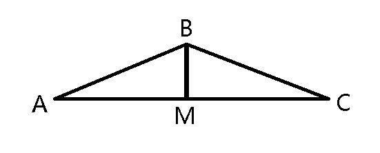
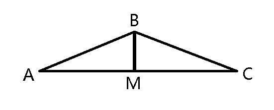
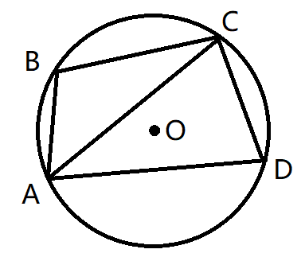
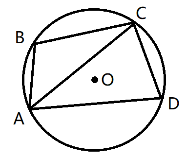
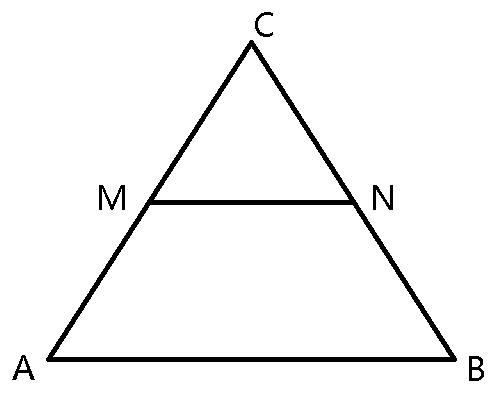
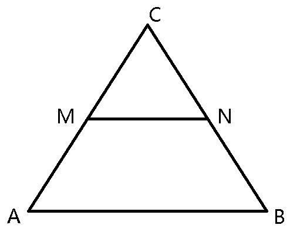
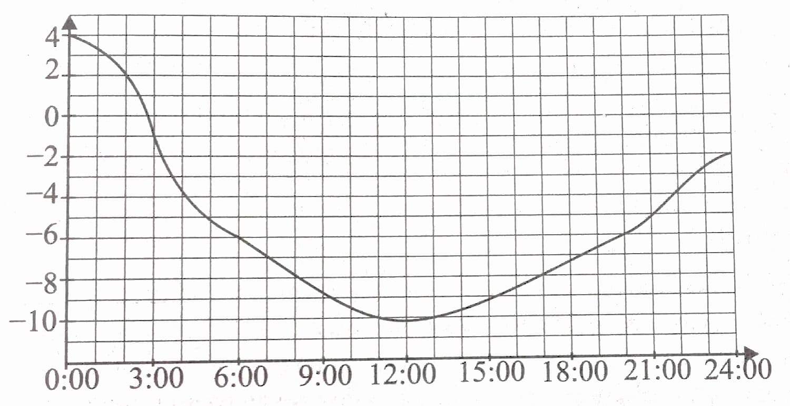
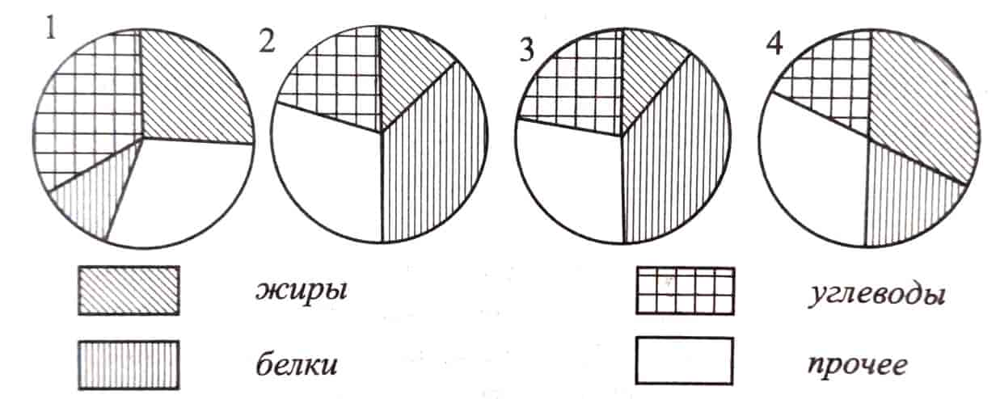

ОГЭ по математике
Вариант №1
Часть 1
Модуль «Алгебра»
1. Найдите значение выражения \(\;(-4,36) + 2,7 * 4,5\)
Ответ:
2. О числах \(a,\, b,\, c\) и \(d\) известно, что \(a > c, \; b = c, \; d \lt a.\) Сравните числа \(b\) и \(d.\)
\(1) \, b = d\)
\(2) \, b \lt d\)
\(3) \, b > d\)
\(4)\) сравнить невозможно
Ответ:
3. Значение какого из выражений является рациональным числом?
\(1) \, \sqrt{48} - 8\sqrt{2} \)
\(2) \, \sqrt{3}*\sqrt{15}\)
\(3)\) \( { \sqrt{3} \over \sqrt{21} } \)
\(4) \, (\sqrt{2}+\sqrt{3})(\sqrt{2}-\sqrt{3})\)
Ответ:
4. Решите уравнение \(\;{25 \over 3}\)\(x^2 - 3 = 0\)
Ответ:
5. Установите соответствие между графиками функций и формулами, которые их задают.
А)
Б)
В)
\(1) \, y =\)\({6 \over x}\)
\(2) \, y =\)\({1 \over 6x}\)
\(3) \, y =-\)\({6 \over x}\)
\(4) \, y =-\)\({1 \over 6x}\)
| А | Б | В |
Ответ:
6. Дана арифметическая прогрессия: \(-37; -26; -15;\)... Найдите первый положительный член этой прогрессии.
Ответ:
7. Найдите значение выражения \(({a\over c}\)\(-\)\({c\over a})\) \(:(a+c)\,\) при \(\,a =\)\({1\over 3}\)\(,\, c =\)\({1\over 11}.\)
Ответ:
8. Решите неравенство \(\,x^2 - 64 > 0.\)
\(1) \, (-8;8) \)
\(2) \, (-\infty; -8)\, \bigcup\,(8; +\infty) \)
\(3)\) решений нет
\(4) \, (-\infty;+\infty)\)
Ответ:
Модуль «Геометрия»
9.В треугольнике \(\,ABC\,AB = BC = 26,\,AC = 48.\)
Найдите длину медианы \(BM.\) 
Найдите длину медианы \(BM.\) 
Ответ:
10.Четырёхугольник \(\,ABCD\,\) вписан в окружность.
Угол \(\,ABC\,\) равен \(\,104^\circ,\,\) угол \(\,CAD\,\) равен \(\,35^\circ.\)
Найдите угол \(\,ABD.\,\) Ответ дайте в градусах. 
Угол \(\,ABC\,\) равен \(\,104^\circ,\,\) угол \(\,CAD\,\) равен \(\,35^\circ.\)
Найдите угол \(\,ABD.\,\) Ответ дайте в градусах. 
Ответ:
11. Основания равнобедренной трапеции равны \(20\) и \(8,\) а её боковые стороны равны \(10.\)
Найдите площадь трапеции.
Найдите площадь трапеции.
Ответ:
12.В треугольнике \(ABC\) отмечены середины \(N\) и \(M\)
сторон \(BC\) и \(AC\) соответственно. Площадь треугольника
\(CNM\) равна \(65.\) Найдите площадь четырёхугольника
\(ABNM.\) 
сторон \(BC\) и \(AC\) соответственно. Площадь треугольника
\(CNM\) равна \(65.\) Найдите площадь четырёхугольника
\(ABNM.\) 
Ответ:
13. Какие из следующих утверждений верны?
\(1)\) Если два угла одного треугольника равны двум углам другого треугольника, то такие треугольники подобны.
\(2)\) Любые два равносторонних треугольника подобны.
\(3)\) Все равнобедренные треугольники подобны.
Ответ:
Модуль «Реальная математика»
14. Учёный Сергей Леонидович выезжает из Ростова-на-Дону на научно-практическую конференцию
в Москву, начало конференции в 10:00. В таблице представлено расписание движения поездов
из Ростова-на-Дону в Москву.
в Москву, начало конференции в 10:00. В таблице представлено расписание движения поездов
из Ростова-на-Дону в Москву.
| Номер поезда | Отправление | Прибытие |
|---|---|---|
| 061 | 11:55 | 05:23 |
| 202 | 12:30 | 05:55 |
| 033 | 12:50 | 08:28 |
| 019 | 14:15 | 07:35 |
Путь от вокзала до места проведения конференции составляет 1 час 30 минут. Укажите номер самого
позднего (по времени отправления) из поездов, который подходит для учёного.
позднего (по времени отправления) из поездов, который подходит для учёного.
\(1) \; 061 \)
\(2) \; 202 \)
\(3) \; 033 \)
\(4) \; 019 \)
Ответ:
15. На картинке показано, как изменялась температура воздуха на протяжении одних суток.
По горизонтали указано время суток, по вертикали — значение температуры в градусах Цельсия.
Сколько часов температура превышала \(-6 \,^\circ\)C?

По горизонтали указано время суток, по вертикали — значение температуры в градусах Цельсия.
Сколько часов температура превышала \(-6 \,^\circ\)C?
Ответ:
16. Стоимость проезда в пригородном электропоезде состовляет \(180\) рублей. Школьникам предоставляется скидка \(50\%.\) Сколько рублей будет стоить проезд для \(12\) взрослых и \(8\) школьников?
Ответ:
17. Кипарис высотой \(7,2\) м растёт на расстоянии \(7\) м от столба, на котором висит фонарь на высоте \(11,4\) м. Найдите длину тени кипариса в метрах.
Ответ:
18. На диаграмме показано распределение содержания питательных веществ в некоторых продуктах. Определите по диаграмме в каком продукте доля углеводов превышает \(25\%.\)

Ответ:
19. В случайном эксперименте симметричную монету бросают трижды. Найдите вероятность того, что первый раз выпадет орёл, а второй и третий раз — решка.
Ответ:
20. Чтобы перевести значение температуры по шкале Цельсия \((T_C)\) в температуру по шкале Фаренгейта \((T_F),\) используют формулу \(T_F = 1,8 * T_C + 32,\) где \(T_C\) — температура, выраженная в градусах Цельсия, \(T_F\) — температура, выраженная в градусах Фаренгейта. Какая температура по шкале Цельсия соответствует температуре \(140^\circ\) по шкале Фаренгейта?
Ответ:
Часть 2
Задания этой части выполняйте с записью решения
Модуль «Алгебра»
21. Решите уравнение \(\;x^3 - x^2 = 49x - 49.\)
Ответ:
22. Свежие фрукты содержат \(85\%\) воды, а высушенные — \(7\%.\) Сколько килограммов сухих фруктов получится из \(62\) кг свежих фруктов?
Ответ:
23. Найдите все значения \(k,\) при каждом из которых прямая \(\,y = kx\,\) имеет с графиком функции \(\,y = -3x^2 - 3\,\) ровно одну общую точку. Постройте этот график и все такие прямые.
Ответ:
Модуль «Геометрия»
24. Точка \(H\) является основанием высоты, проведённой из вершины прямого угла \(B\) треугольника \(ABC\) к гипотенузе \(AC.\) Найдите \(BC,\) если \(BH = 9, AH = 40.\)
Ответ:
25. В трапеции \(ABCD\) основание \(AB\) и боковая сторона \(BC\) равны. Докажите, что диагональ \(AC\) лежит на бисскетрисе угла \(DCB.\)
26. Из точки \(F,\) лежащей вне окружности, проведена касательная, касающаяся окружности в точке \(E\) и секущая, пересекающая окружность в двух точках \(P\) и \(Q.\) Расстояния от точек \(P\) и \(Q\) до касательной равны соответственно \(3\) и \(5.\) Найдите расстояние от точки \(E\) до прямой \(FQ.\) Ответ дайте без корня.
Ответ: